ここでは、RoboCarが搭載している画像認識処理について説明します。 ステレオカメラから取得し、IMAPCARでリアルタイム画像処理した結果を、ライブラリを通じて利用できます。
IMAPCAR内で実装されている処理のフローダイアグラムです。
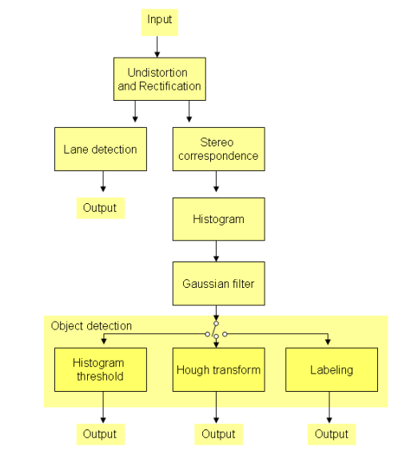
図: 画像処理フロー
レンズ歪み、光軸の補正を行い、左右のカメラの歪みのない画像を 出力します。また、両カメラ間の位置、姿勢補正を行い、方向位置を合わせて、 x方向のみオフセットされた位置関係のステレオ画像を生成します。
ブロックマッチング法により、画素ごとの左右の視差を求め、 奥行き情報が色の濃淡になるような画像に変換します。 ここでは、1ピクセル以下の視差情報も計算から求めています。
主に車両での移動に必要な水平面に投影するために 画像Y方向のヒストグラムをとります。 視差情報(物体の奥行き情報)と、その距離における物体の量 の関係になります。
ヒストグラム画像に対してノイズを削除するために ぼかしフィルタをかけます。 後段のオブジェクトの抽出のためです。
量の多いbinを抽出し、少ないbinを捨てるフィルタです。
ヒストグラムから横方向に長い直線成分を検出します。 同じ距離にある物体を抽出するための処理です。
まとまった画素をひとつの障害物とみなすためのラベリング処理です。
画面中から車線を検出します。
それぞれのステップ後の画像や結果のフォーマットについて 説明します。 ユーザは、それぞれの処理途中の画像を読み出して、 処理の確認と、パラメータの調整の確認に使用することができます。
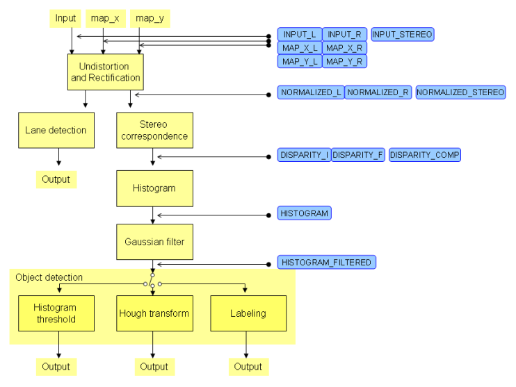
図: 各ポイントの画像データ
以下、読み込み可能な各フォーマットについて説明します。
INPUT_L, INPUT_R)カメラからの入力画像、左と右です。
それぞれ、640x240の8bitグレースケールデータです。
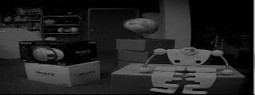
図: 入力画像(L)
INPUT_STEREO)カメラからの入力画像、左と右です。
320x240の8bitグレースケールデータです。
INPUT_L,INPUT_Rをそれぞれ320x240に縮小し、両方をまとめて
読み出します。
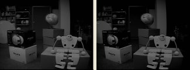
図: 入力画像 ステレオ
MAP_X_L, MAP_X_R)レンズ歪み補正と、ステレオカメラ間の位置、姿勢補正を同時に行うX方向マップ用のデータです。 256x640の8bitグレースケールデータです。このうち有効な画素は、240x640です。
カメラキャリブレーション時に作成し、 プログラム実行時にIMAPCARメモリへ転送して使用されます。 そのデータの確認用として読み出すことができます。
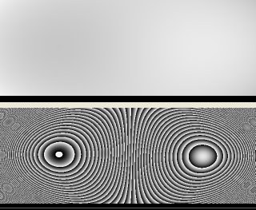
図: 補正用マップ画像X
MAP_Y_L, MAP_Y_R)レンズ歪み補正と、ステレオカメラ間の位置、姿勢補正を同時に行うY方向マップ用のデータです。 640x240の8bitグレースケールデータです(左に90度回転しているため)。
カメラキャリブレーション時に作成し、 プログラム実行時にはIMAPCARメモリに転送して使用されます。 そのデータの確認用として読み出すことができます。。
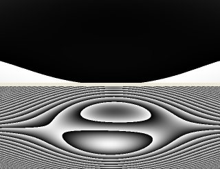
図: 補正用マップ画像Y
NORMALIZED_L, NORMALIZED_R)レンズ歪みとステレオカメラ間の位置、姿勢補正によって正規化された画像です。 640x240の8bitグレースケールデータです。ただし、歪み補正の結果により有効ではない 領域が存在します。
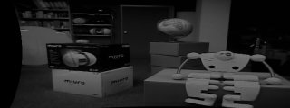
図: 正規化画像(L)
NORMALIZED_STEREO)正規化画像の左右です。
NORMALIZED_L, NORMALIZED_Rをそれぞれ320x240に縮小し、両方をまとめて
読み出します。
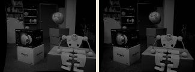
図: 正規化画像 ステレオ
DISPARITY_I, DISPARITY_F)256x237の8bitグレースケールデータです。このうち有効画素は、213x237です。
DISPARITY_Iの各画素の値は視差値(Disparity)の整数部分になります。0～120の範囲です。
DISPARITY_Fの各画素の値は視差値(Disparity)の少数点以下の値になります。
ブロックマッチング処理において、閾値以下の画素は0になります。
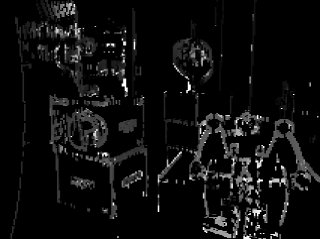
図: 視差画像 整数部
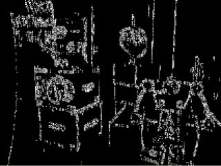
図: 視差画像 小数部
DISPARITY_COMP)256x237の8bitグレースケールデータです。このうち有効画素は、213x237です。
上記のDISPARITY_IとDISPARITY_Fを両方読み出すデータです。
HISTOGRAM)視差画像DISPARITY_Iにおいて、各X座標で、縦方向(画像のY方向)の値をヒストグラムにした画像です。
XYZの3次元の画像を、擬似的にXZの2次元に投影した画像となります。
各画素の値は、その位置に物体があるらしい「度合い」をあらわします。
128x213の8bitグレースケールデータです(213x128のデータが左に90度回転している)。
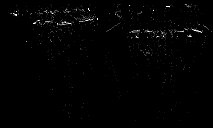
図: ヒストグラム画像
HISTOGRAM_FILTERED)上記データをガウシアンフィルタでスムージングした画像です。 128x213の8bitグレースケールデータです(213x128のデータが左に90度回転している)。
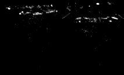
図: ヒストグラム画像 フィルター後
それぞれの処理ブロックには外部からパラメータを指定できます。 ユーザが認識したい物体や、実験の環境によって もっとも適切なパラメータを調整できるようになっています。
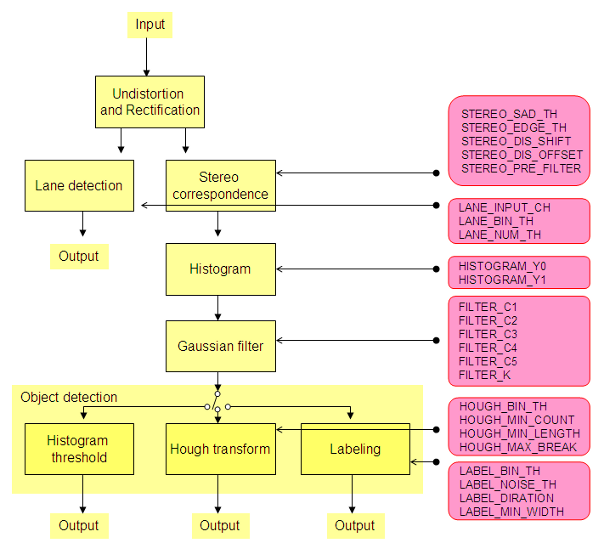
図: ヒストグラム画像
なし
STEREO_SAD_THブロックマッチングの相関度に対する閾値を設定します。
STEREO_EDGE_THエッジ量に対する閾値を設定します。
STEREO_DIS_SHIFT視差計算結果をnビット上位へシフトします。 空いた最下位ビットには、サブピクセル計算結果がシフトインします。
STEREO_DIS_OFFSETブロックマッチングの探索初期位置シフトさせます。 無限遠で、マイナスの視差になっていしまう場合、視差が正しく計算できないので、 この値を調整することで、無限遠を視差0に調整します。
STEREO_PRE_FILTERブロックマッチング計算前に、左右のそれぞれの画像に エッジ強調フィルタをかけます。OffかOnです。
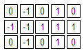
図: エッジ強調フィルタごおgぇdら鵜by
LANE_INPUT_CH車線検出に左右どちらの画像を使用するかを選択します。
LANE_BIN_TH白線検出に用いる二値化閾値を指定します。
LANE_NUM_TH白線面積に対する閾値を設定します。 二値化画像の白画素面積を領域ごとに求め、閾値以上の領域のみ有効とします。
HISTOGRAM_Y0HISTOGRAM_Y1ヒストグラム画像に変換する対象をY方向で指定します。Y0 ガウスフィルタの係数を設定します。
フィルタは5x5で演算を行い、係数は以下の通り適用します。 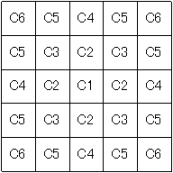 図: フィルタ係数 ガウスフィルタの係数を設定します。
最後にこの値をかけます。 なし ハフ変換に用いる二値化閾値を設定します。 ハフ変換で求められる直線の、有効線長に対する閾値を設定します。 ハフ変換で求められる直線の、全体線長に対する閾値を設定します。 ハフ変換における、線分の途切れに対する閾値を設定します。 ラベリングに用いる二値化閾値を設定します。 ラベリング時のノイズ除去閾値を設定します。
ラベル付けを行う前の二値画像に対して指定回数の収縮処理を行います。 ラベリング時のラベル連結強度を設定します。
ラベル付けを行う前の二値画像に対して指定回数の膨張処理を行います。 検出するオブジェクトの最小幅を設定します。
ラベル付けされたオブジェクトに対して、X方向のサイズによりフィルタリングを行います。 白線領域を検知した場合、領域の中心画像を格納します。
このツール上で車線検出を表示する場合は、あわせてImage Idを、
ヒストグラム値(value)と、そのヒストグラムの表すindex(つまりヒストグラム画像でのY座標値=視差量)
のセットを、横方向213ピクセル分。1位から20位までのトップ20を返します。 検出したオブジェクトの数が格納されます。
座標データは先頭から順に有効データが格納され、それ以降のデータは無効となります。 検出したオブジェクトのX座標が格納されます。
X0が左端のX座標、X1が右端のX座標を表します。
（常に X0[n] ≦ X1[n] の関係が成立する） 検出したオブジェクトの視差情報が格納されます。
Y0、Y1にはそれぞれX0、X1に対応する視差情報が格納されます。
ラベリングを用いた場合は、常にY0[n] = Y1[n] の関係が成立します。 出力結果フォーマットはハフ変換と同じです。ガウシアンフィル
FILTER_C1～FILTER_C6FILTER_Kヒストグラム抽出
ハフ変換
HOUGH_BIN_THHOUGH_MIN_COUNTHOUGH_MIN_LENGTHHOUGH_MAX_BREAKラベリング
LABEL_BIN_THLABEL_NOISE_THLABEL_DIRATIONLABEL_MIN_WIDTH出力結果
車線検出
LANE_XPOS_L[8]LANE_YPOS_L[8]LANE_XPOS_R[8]LANE_YPOS_R[8]XPOS_L、YPOS_Lに画面左側の白線領域、XPOS_R、YPOS_Rに画面右側の白線領域を格納します。
白線領域が検知できなかった場合は、XPOS、YPOS共に0が格納されます。INPUT_L, INPUT_R, NORMALIZED_L, NORMALIZED_R のどれかに指定してください。ヒストグラム抽出
VALUE[213*20]INDEX[213*20]ハフ変換
OBJECT_NPOINT
OBJECT_POINT_X0[512]OBJECT_POINT_X1[512]
OBJECT_POINT_Y0[512]OBJECT_POINT_Y1[512]ラベリング
キャリブレーションについて（第7章のキャリブレーションツールと共通）